1
Programming Arduino
This chapter summarizes the basics of Arduino. If you are completely new to Arduino, then you might find it useful to also read Programming Arduino: Getting Started with Sketches (McGraw-Hill Professional, 2012).

What Is Arduino?
The term Arduino is used to describe both the physical Arduino board (of which the most popular type is the Arduino Uno) and the Arduino system as a whole. The system also includes the software you need to run on your computer (to program the board) and the peripheral shields that you can plug into an Arduino board.
To use an Arduino, you also need a “proper” computer. This can be a Mac, Windows PC, Linux PC, or even something as humble as a Raspberry Pi. The main reason that you need the computer is so you can download programs onto the Arduino board. Once installed on the Arduino, these programs can then run independently.
Figure 1-1 shows an Arduino Uno.
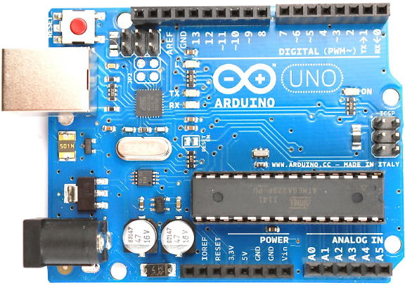
Figure 1-1 An Arduino Uno
The Arduino can also communicate with your computer over USB. While the computer is connected, you can send messages in both directions. Figure 1-2 shows the relationship between the Arduino and your computer.
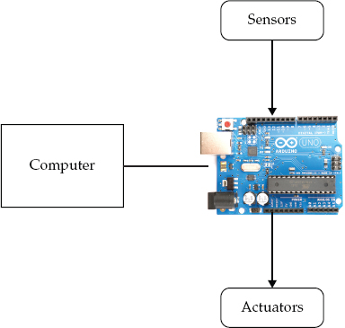
Figure 1-2 The Arduino and your computer
An Arduino is unlike a conventional computer in that it has hardly any memory, no operating system, and no keyboard mouse or screen interface. Its purpose is to control things by interfacing with sensors and actuators. So, for instance, you might attach a sensor to measure the temperature and a relay to control the power to a heater.
Figure 1-3 shows some of the things that you can attach to an Arduino board. There are no doubt many more types of devices that you can connect to an Arduino board.
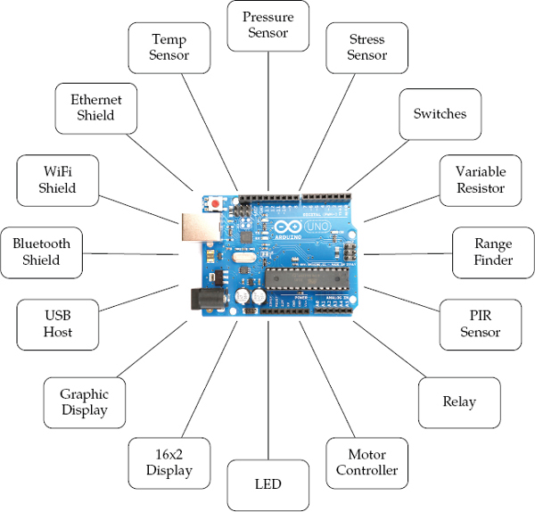
Figure 1-3 Interfacing with an Arduino
Here is a short selection of some of the amazing projects that have been built using an Arduino:
• Bubblino—an Arduino linked to a bubble machine that blows bubbles when you tweet it!
• 3D LED cubes
• Geiger counters
• Musical instruments
• Remote sensors
• Robots
Installation and the IDE
The software that you use to program the Arduino is called the Arduino Integrated Development Environment (IDE). If you are a software developer and accustomed to using complex IDEs like Eclipse or Visual Studio, you’ll find the Arduino IDE very simple—and possibly find yourself wishing for repository integration, command completion, and the like. If you are relatively new to programming, you will love the Arduino’s simplicity and ease of use.
Installing the IDE
The first step is to download the software for your type of computer from the official Arduino website: http://arduino.cc/en/Main/Software.
Once you’ve downloaded the software, then you can find detailed installation instructions for each platform here: http://arduino.cc/en/Guide/HomePage.
One of the nice things about the Arduino is that all you need to get started is an Arduino, a computer, and a USB lead to connect the two. The Arduino can even be powered over the USB connection to the computer.
Blink
To prove that the Arduino is working, we are going to program it to flash an LED that is labeled L on the Arduino board and hence is known as the “L” LED.
Start by launching the Arduino IDE on your computer. Then, from the File menu, (Figure 1-4) select Examples | 01 Basics | Blink.
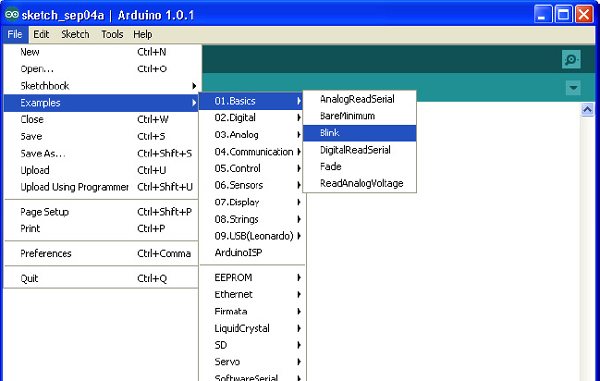
Figure 1-4 The Arduino IDE loading Blink
In an attempt to make programming the Arduino sound less daunting to nonprogrammers, programs on the Arduino are referred to as sketches. Before you can send the Blink sketch to your Arduino, you need to tell the Arduino IDE what type of Arduino you’re using. The most common type is the Arduino Uno, and in this chapter, I assume that is what you have. So from the Tools | Board menu, select Arduino Uno (Figure 1-5).
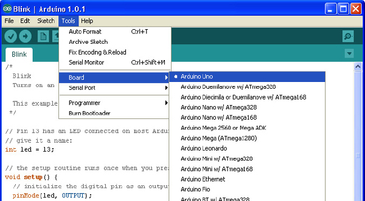
Figure 1-5 Selecting the board type
As well as selecting the board type, you also need to select the port it is connected to. In Windows this is easy, as it is usually COM4 and will probably be the only port in the list (see Figure 1-6). On a Mac or Linux computer, however, there will generally be more serial devices listed. The Arduino IDE shows the most recently connected devices first, so your Arduino board should be at the top of the list.
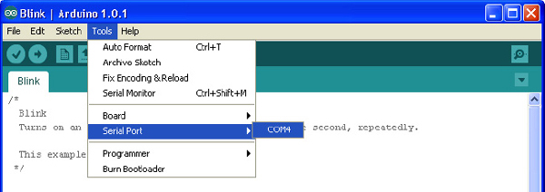
Figure 1-6 Selecting the serial port
To actually upload the sketch onto the Arduino board, click the Upload button on the toolbar. This is the second button on the toolbar, which is highlighted in Figure 1-7.
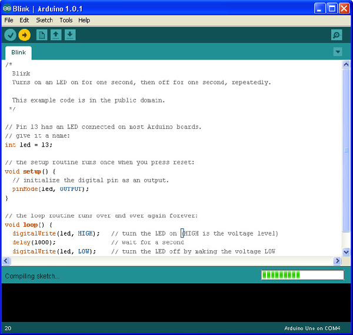
Figure 1-7 Uploading the Blink sketch
Once, you click the Upload button, a few things should happen. First, a progress bar will appear as the Arduino IDE compiles the sketch (meaning it converts the sketch into a suitable form for uploading). Then, the LEDs on the Arduino labeled Rx and Tx should flicker for a while. Finally, the LED labeled L should start to blink. The Arduino IDE will also display a message like “Binary sketch size: 1,084 bytes (of a 32,256 byte maximum).” This means the sketch has used about 1kB of the 32kB of the flash memory available for programs on the Arduino.
Before you start programming, let’s have a look at the hardware that your programs, or sketches, will have to work within and have available for their use.
A Tour of Arduino
Figure 1-8 shows the anatomy of an Arduino Board. Starting at the top, next to the USB socket in the top-left corner, is the Reset switch. Clicking this sends a logic pulse to the microcontroller’s Reset pin, clearing the microcontroller’s memory so it can start its program fresh. Note that any program stored on the device is retained because it is kept in nonvolatile flash memory—that is, memory that remembers even when the device is not powered on.
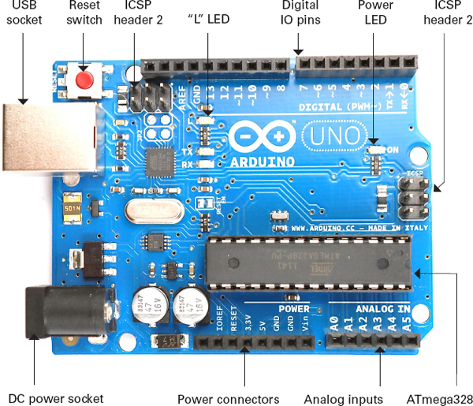
Figure 1-8 Anatomy of an Arduino board
Power Supply
The Arduino can either be powered through either the USB connection or the DC power socket below it. When powering the Arduino from a DC adaptor or batteries, anything between 7.5 and 12V DC can be supplied through the power socket. The Arduino itself only uses about 50mA. So a small PP3 9V battery (200mAh) will power it for around 40 hours.
When the Arduino is powered on, the power LED on the right of the Uno (on the left of the Leonardo) is lit.
Power Connections
Next, let’s look at the connectors at the bottom of Figure 1-8. Apart from the first connection, you can read the connection names next to the connectors.
The first unlabeled connection is reserved for later use. The next pin, IOREF, indicates the voltage at which the Arduino operates. Both the Uno and Leonardo operate at 5V, so this pin will always be set at 5V, but you will not use it for anything described in this book. Its purpose is to allow shields attached to 3V Arduinos like the Arduino Due to detect the voltage at which the Arduino operates.
The next connect is Reset. This connection does the same thing as pressing the Reset switch on the Arduino. Rather like rebooting a PC, it resets the microcontroller to begin its program from the start. The Reset connector allows you to reset the microcontroller by momentarily setting this pin low (connecting it to GND). It is fairly unlikely that you’ll need to do this, but it’s quite nice to know that the connector is there.
The remaining pins provide different voltages (3.3, 5, GND, and 9), as labeled. GND, or ground, just means zero volts. It is the reference voltage to which all other voltages on the board are relative.
The two GND connections are identical; having more than one GND pin to connect things to is useful. In fact, there is another GND socket at the top of the board.
Analog Inputs
The next section of connections is labeled Analog In 0 to 5. These six pins can be used to measure the voltage connected to them so the value can be used in a sketch. Although labeled as analog inputs, these connections can also be used as digital inputs or outputs. By default, however, they are analog inputs.
Digital Connections
Now let’s switch to the top connector, starting on the right side (Figure 1-8). We have pins labeled Digital 0 to 13. These can be used as either inputs or outputs. When using them as outputs, you can control them from a sketch. If you turn them on from your sketch, they will be at 5V, and if you turn them off, they will be at 0V. As with the supply connectors, you have to be careful not to exceed their maximum current capabilities.
These connections can supply 40mA at 5V—more than enough power to light a standard LED, but not enough to drive an electric motor directly.
Arduino Boards
The Arduino Uno (Figure 1-1) is the current incarnation of the original Arduino board. It is the most common Arduino board and is generally what people mean when they say they are using an Arduino.
The other types of Arduino board all satisfy special requirements, like the need for more I/O (input/output) connections, faster performance, or a smaller board, or to be stitched into clothing, connect to Android phones, or integrate easily with wireless and so on.
No matter how different the hardware, each board is programmed from the Arduino IDE, with only minor variations in the software features they can use. Once you have learned how to use one Arduino Board, you have pretty much learned how to use all of them.
Let’s look at the current range of official Arduino boards. There are other Arduinos than the ones discussed here, but they tend not to be that popular. For a full list of boards, check out the official Arduino website (www.arduino.cc).
Uno and Similar
The Uno R3 is the latest of a series of “standard” boards that include the plain Uno, Duemilanove, Diecimila, and NG. These boards all use the ATmega168 or ATmega328 microprocessors, which are pretty much the same, apart from differing amounts of memory.
The other current Arduino, with the same size and connections as the Uno R3, is the Arduino Leonardo (Figure 1-9). As you can see, the board is much more sparsely populated than the Uno. This is because it uses a different processor. The Leonardo uses the ATmega32u4, which is similar to the ATmega328 but includes a built-in USB interface, removing the need for the extra components that you find on the Uno. Moreover, the Leonardo has slightly more memory, more analog inputs, and other benefits. It is also less expensive than the Uno. In many respects, it is also a better design than the Uno.
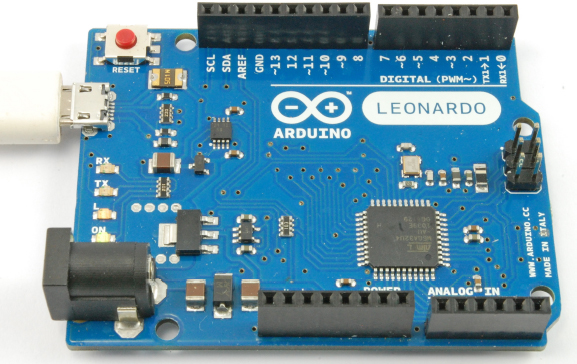
Figure 1-9 The Arduino Leonardo
If this is the case, then you might be wondering why the Leonardo is not the most popular Arduino board, rather than the Uno. The reason is that the improvements offered by the Leonardo come at the cost of making it slightly incompatible with the Uno and its predecessors. Some expansion shields (especially old designs) will not work on the Leonardo. In time, these differences will become less of a problem. At that point, it will be interesting to see if the Leonardo and its successors become the more popular boards.
The Arduino Ethernet is a relatively new addition to the Arduino stable. It combines basic Uno features with an Ethernet interface, allowing you to connect it to a network, without having to add an Ethernet shield.
Big Arduino Boards
Sometimes an Uno or Leonardo just doesn’t have enough I/O pins for the application that you intend to use it for. The choice then arises of either using hardware expansion for the Uno or switching to a bigger board.
TIP If you are coming to Arduino for the first time, do not buy one of these larger boards. It is tempting because they are bigger and faster, but they have shield compatibility problems and you will be much better off with a “standard” Uno.
The super-sized Arduinos have the same sockets as an Uno, but then they add a double row of extra I/O pins on the end and a longer length of pins along the side (Figure 1-10).
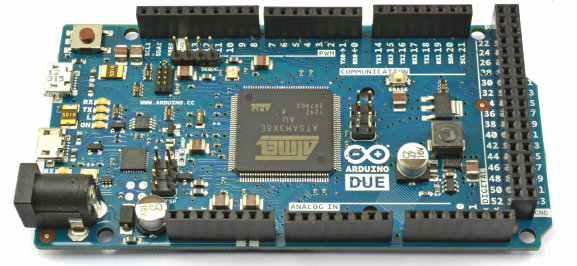
Figure 1-10 The Arduino Due
Traditionally, the “bigger” board would be an Arduino Mega 2560. These boards, in common with all the larger Arduino boards, have more of every kind of memory. The Mega 2560 and Mega ADK both use processors with similar power to the Arduino Uno. However, the Arduino Due is an altogether more powerful beast. This power comes in the form of a 84 MHz processor (compared with the Uno’s 16 MHz) but at the cost of further compatibility problems. The biggest of these is that the Due operates at 3.3V rather than the 5Vs of most previous Arduinos. Not surprisingly, this means that many Arduino shields are incompatible with it.
For the most demanding projects, however, this board has many advantages.
• Lots of memory for programming and data
• Hardware music output capabilities (hardware digital to analog converters)
• Four serial ports
• Two USB ports
• USB host and OTG interfaces
• USB keyboard and mouse emulation
Small Arduino Boards
Just as the Uno is too small for some projects, it can also be too big for others. Although Arduino boards are low cost, it gets expensive if you start leaving one embedded in every project you make. There are a range of smaller and “pro” Arduino boards, designed either to be physically smaller than a regular Uno or to keep costs down by omitting features not required in most projects.
Figure 1-11 shows an Arduino Mini. These boards do not have a USB interface; rather, you need a separate adaptor module to program them. As well as the Mini, there are also Nanos and Micros, both of which have built-in USB but cost more.

Figure 1-11 An Arduino Mini and Programmer
LilyPad and LilyPad USB Boards
One of the most interesting Arduino styles is the LilyPad (Figure 1-12) and the newer LilyPad USB. These boards are designed to be stitched into clothing using conductive threads and a range of similar LilyPad modules—for LEDs, switches, accelerometers, and so on. The older LilyPad boards require a separate USB interface, the same one required for the Arduino Mini. However, these boards are gradually being replaced by the Arduino LilyPad USB, which has a built-in USB connector.

Figure 1-12 An Arduino LilyPad
Unofficial Arduinos
As well as the “official” boards just described, there are also many unofficial copies and variations on the Arduino hardware, given its open source status. Straight Arduino clones are easy to come by on eBay and other low-cost outlets and are simply copies of the Arduino designs. They are only really of interest because of their price. There are also some interesting Arduino-based designs that offer extra features.
Two examples of these kind of boards that are worth looking at are
• EtherTen Arduino Ethernet-type board (www.freetronics.com/products/etherten)
• Leostick A slim-line Leonardo-type board with built-in USB plug (www.freetronics.com/collections/arduino/products/leostick)
Now that you have a bit more information about the hardware side of an Arduino, we can turn to programming it.
Programming Language
A common misconception about Arduinos is that they have their own programming language. Actually, they are programmed in the language simply called C. This language has been around since the early days of computing. What Arduino does provide is a nice easy-to-use set of commands written in C that you can use in your programs.
Purists may wish to point out that Arduino uses C++, the object-oriented extension to C. Although, strictly speaking, this is true, having only 1 or 2kB of memory available generally means that the kinds of habits encouraged by object-oriented programming are not normally a good idea with Arduino, so aside from a few specialized areas, you are effectively programming in C.
Let’s start by modifying the Blink sketch.
Modifying the Blink Sketch
It may be that your Arduino was already blinking when you first plugged it in. That is because the Arduino is often shipped with the Blink sketch installed.
If this is the case, then you might like to prove to yourself that you have actually done something by changing the blink rate. Let’s look at the Blink sketch to see how to change it to make the LED blink faster.
The first part of the sketch is just a comment telling you what the sketch is supposed to do. A comment is not actual program code. Part of the preparation for the code being uploaded is for all such “comments” to be stripped out. Anything between /* and */ is ignored by the computer, but should be readable by humans.
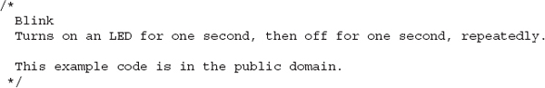
Then, there are two individual line comments, just like the block comments, except they start with //. These comments tell you what is happening. In this case, the comment helpfully tells you that pin 13 is the pin we are going to flash. We have chosen that pin because on an Arduino Uno it is connected to the built-in “L” LED.
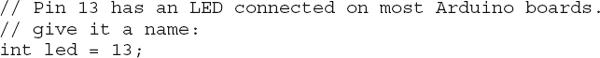
The next part of the sketch is the setup function. Every Arduino sketch must have a setup function, and this function runs every time the Arduino is reset, either because (as the comment says) the Reset button is pressed or the Arduino is powered up.
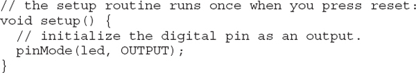
The structure of this text is a little confusing if you are new to programming. A function is a section of code that has been given a name (in this case, the name is setup). For now, just use the previous text as a template and know that you must start your sketch with the first line void setup() { and then enter the commands that you want to issue, each on a line ending with a semicolon (;). The end of the function is marked with a } symbol.
In this case, the only command Arduino will issue is the pinMode(led, OUTPUT) command that, not unsurprisingly, sets that pin to be an output.
Next comes the juicy part of the sketch, the loop function.
Like the setup function, every Arduino sketch has to have a loop function. Unlike setup, which only runs once after a reset, the loop function runs continuously. That is, as soon as all its instructions have been run, it starts again.
In the loop function, you turn on the LED by issuing the digitalWrite(led, HIGH) instruction. You then set the sketch to pause for a second by using the command delay(1000). The value 1000 is for 1000 milliseconds or 1 second. You then turn the LED back on again and delay for another second before the whole process starts over.
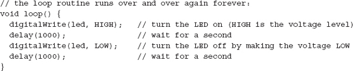
To modify this sketch to make the LED blink faster, change both occurrences of 1000 to be 200. These changes are both in the loop function, so your function should now look like this:
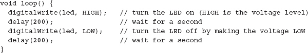
If you try and save the sketch before uploading it, the Arduino IDE reminds you that it is a “read-only” example sketch, but it will offer you the option to save it as a copy, which you can then modify to your heart’s content.
You do not have to do this; you can just upload the sketch unsaved. But if you do decide to save this or any other sketch, you will find that it then appears in the File | Sketchbook menu on the Arduino IDE.
So, either way, click the Upload button again, and when the uploading is complete, the Arduino resets itself and the LED should start to blink much faster.
Variables
Variables give a name to a number. Actually, they can be a lot more powerful than this, but for now, we’ll use them for this purpose.
When defining a variable in C, you have to specify the type of variable. For example, if you want your variables to be whole numbers, you would use int (short for integer). To define a variable called delayPeriod with a value of 200, you need to write:
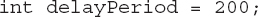
Notice that because delayPeriod is a name, there cannot be any spaces between words. The convention is to start variables with a lowercase letter and begin each new word with an uppercase letter. Programmers often call this bumpy case or camel case.
Let’s fit this into the blink sketch, so that instead of “hard-coding” the value 200 for the length of delay, we use a variable instead:
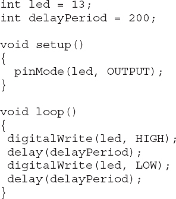
At each place in the sketch where we used to refer to 200, we now refer to delayPeriod.
Now, if you want to make the sketch blink faster, you can just change the value of delayPeriod in one place.
If
Normally, your lines of program are executed in order one after the other, with no exceptions. But what if you don’t want to do that? What if you only want to execute part of a sketch if some condition is true?
A good example of that might be to only do something when a button, attached to the Arduino, is pressed. The code might look like this:
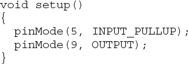
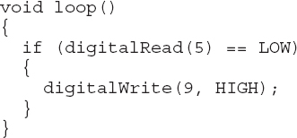
In this case, the condition (after the if) is that the value read from pin 5 has a value of LOW. The double equals symbol == is used for comparing two values. It is easy to confuse it with a single equals sign that assigns a value to a variable. An if statement says, if this condition is true, then the commands inside the curly braces are executed. In this case, the action is to set digital output to 9, HIGH.
If the condition is not true, then the Arduino just continues on with the next thing. In this case, that is the loop function, which runs again.
Loops
As well as conditionally performing some of the actions, you also need your sketch to be able to repeat actions over and over again. You get this for free of course by putting commands into the sketch’s loop function. That is, after all, what happens with the Blink example.
Sometimes, however, you’ll need to be more specific about the number of times that you want to repeat something. You can accomplish this with the for command, which allows you to use a counter variable. For example, let’s write a sketch that blinks the LED ten times. Later, you’ll see why this approach might be considered less than ideal under some circumstances, but for now, it will do just fine.
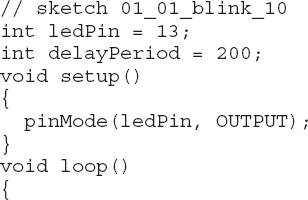
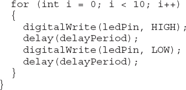
NOTE As this is the first full sketch, it’s named in a comment at the top of the file. All the sketches named in this way can be downloaded from the author’s website at www.simonmonk.org.
To install all the sketches into your Arduino environment, unzip the file containing the sketches into your Arduino directory, which you’ll find in your Documents folder. The Arduino IDE automatically creates this folder for you the first time it is run.
The for command defines a variable called i and gives it an initial value of 0. After the ; the text i < 10 appears. This is the condition for staying in the loop. In other words, while i is less than 10, keep doing the things inside the curly brackets.
The last part of the for command is i++. This is C shorthand for “i = i + 1” which, not surprisingly, adds 1 to the value of i. One is added to the value of i each time around the loop. This is what ensures that you can escape from the loop, because if you keep adding 1 to i, eventually it will be greater than 10.
Functions
Functions are a way to group a set of programming commands into a useful chunk. This helps to divide your sketch into manageable chunks, making it easier to use.
For example, let’s write a sketch that makes the Arduino blink rapidly 10 times when it first starts and then blink steadily once each second thereafter.
Read through the following listing, and then I’ll explain what is going on.
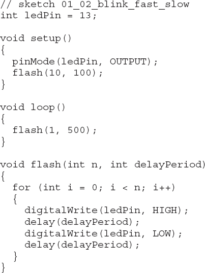
The setup function now contains a line that says flash(10, 100);. This means flash 10 times with a delayPeriod of 100 milliseconds. The flash command is not a built-in Arduino command; you are going to create this quite useful function yourself.
The definition of the function is at the end of the sketch. The first line of the function definition is
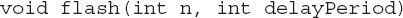
This tells the Arduino that you are defining your own function called flash and that it takes two parameters, both of which are ints. The first is n, which is the number of times to flash the LED, and the second is delayPeriod, which is the delay to use between turning the LED on or off.
These two parameter variables can only be used inside the function. So, n is used in the for command to determine how many times to repeat the loop, and delayPeriod is used inside the delay commands.
The sketch’s loop function also uses the previous flash function, but with a longer delayPeriod, and it only makes the LED flash once. Because it is inside loop, it will just keep flashing anyway.
Digital Inputs
To get the most out of this section, you need to find a short length of wire or even a metal paperclip that has been straightened.
Load the following sketch and run it:
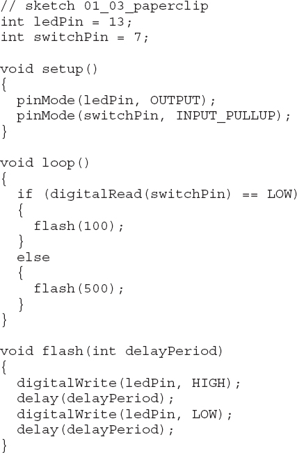
Use your wire or paperclip to connect the GND pin to digital pin 7, as shown in Figure 1-13. You can do this with your Arduino plugged in, but only after you have uploaded the sketch. The reason is that if on some previous sketch pin 7 had been set to an output, then connecting it to the GND would damage the pin. Since the sketch sets pin 7 to be an input, this is safe.
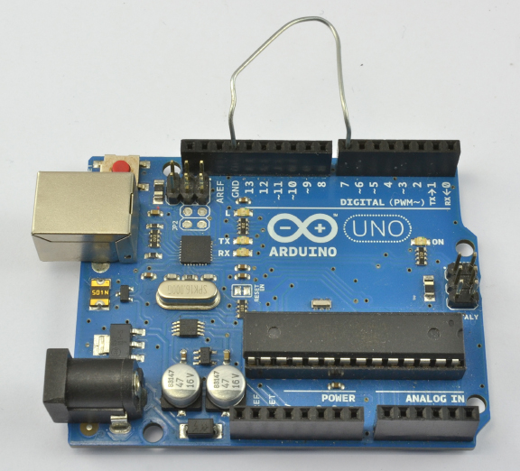
Figure 1-13 Using a digital input
This is what should happen: when the paperclip is connected, the LED will flash quickly, and when it is not connected, it will flash slowly.
Let’s dissect the sketch and see how it works.
First, we have a new variable called switchPin. This variable is assigned to pin 7. So the paperclip is acting like a switch. In the setup function, we specify that this pin will be an input using the pinMode command. The second argument to pinMode is not simply INPUT but actually INPUT_PULLUP. This tells the Arduino that, by default, the input is to be HIGH, unless it is pulled LOW by connecting it to GND (with the paperclip).
In the loop function, we use the digitalRead command to test the value at the input pin. If it is LOW (the paperclip is in place), then it calls a function called flash with a parameter of 100 (the delayPeriod). This makes the LED blink fast.
If, on the other hand, the input is HIGH, then the commands in the else part of the if statement are run. This calls the same flash function but with a much longer delay, making the LED blink slowly.
The flash function is a simplified version of the flash function that you used in the previous sketch, and it just blinks once with the period specified.
Sometimes you will connect digital outputs from a module that does not act as a switch, but actually produces an output that is either HIGH or LOW. In this case, you can use INPUT rather than INPUT_PULLUP in the pinMode function.
Digital Outputs
There is not really much new to say about digital outputs from a programming point of view, as you have already used them with the built-in LED on pin 13.
The essence of a digital output is that in your setup function you define them as being an output using this command:
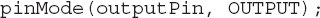
When you want to set the output HIGH or LOW, you use the digitalWrite command:
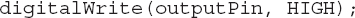
The Serial Monitor
Because your Arduino is connected to your computer by USB, you can send messages between the two using a feature of the Arduino IDE called the Serial Monitor.
To illustrate, let’s modify the sketch 01_03 so that, instead of changing the LED blink rate when digital input 7 is LOW, it sends a message.
Load this sketch:
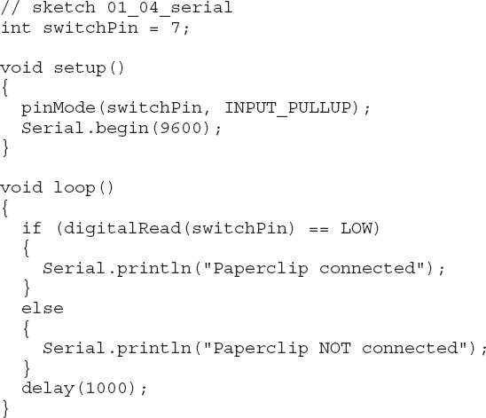
Now open the Serial Monitor on the Arduino IDE by clicking the icon that looks like a magnifying glass on the toolbar. You should immediately start to see some messages appear, once each second (Figure 1-14).
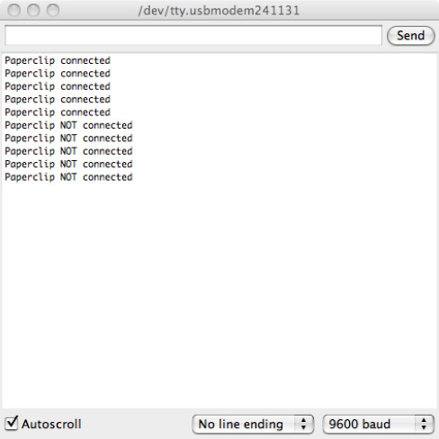
Figure 1-14 The Serial Monitor
Disconnect one end of the paperclip, and you should see the message change.
Because you are no longer using the built-in LED, you do not need the ledPin variable any more. Instead, you need to use the Serial.begin command to start serial communications. The parameter is the baud rate. In Chapter 13, you will find out much more about serial communications.
To write messages to the Serial Monitor, all you need to do is use the Serial.println command.
In this example, the Arduino is sending messages to the Serial Monitor.
Arrays and Strings
Arrays are a way of containing a list of values. The variables you have met so far have only contained a single value, usually an int. By contrast, an array contains a list of values, and you can access any one of those values by its position in the list.
C, in common with most programming languages, begins its index positions at 0 rather than 1. This means that the first element is actually element zero.
You have already met one kind of array in the last section when you learned about the Serial Monitor. Messages like "Paperclip NOT connected" are called character arrays because they are essentially collections of characters.
For example, let’s teach Arduino to talk gibberish over the Serial Monitor.
The following sketch has an array of character arrays and will pick one at random and display it on the Serial Monitor after a random amount of time. This sketch has the added advantage of showing you how to produce random numbers with an Arduino.
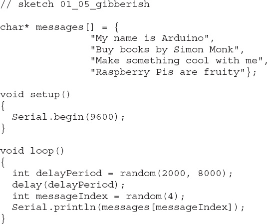
Each of the messages, or strings as collections of characters are often called, has a data type of char*. The * is a pointer to something. We’ll get to the advanced topic of pointers in Chapter 6. The [] on the end of the variable declaration indicates that the variable is an array of char* rather than just a single char* on its own.
Inside the loop function, the value delayPeriod is assigned a random value between 2000 and 7999 (the second argument to “random” is exclusive). A pause of this length is then set using the delay function.
The messageIndex variable is also assigned a random value using random, but this time random is only given one parameter, in which case a random number between 0 and 3 is generated as the index for the message to be displayed.
Finally, the message at that position is sent to the Serial Monitor. Try out the sketch, remembering to open the Serial Monitor.
Analog Inputs
The Arduino pins labeled A0 to A5 can measure the voltage applied to them. The voltage must be between 0 and 5V. The built-in Arduino function that does this is analogRead, and it returns a value between 0 and 1023: 0 at 0V and 1023 at 5V. So to convert that number into a value between 0 and 5, you have to divide 1023/5 = 204.6.
To measure voltage, int is not the ideal data type as it only represents whole numbers and it would be good to see the fractional voltage, for which you need to use the float data type.
Load this sketch onto your Arduino and then attach the paperclip between A0 and 3.3V (Figure 1-15).
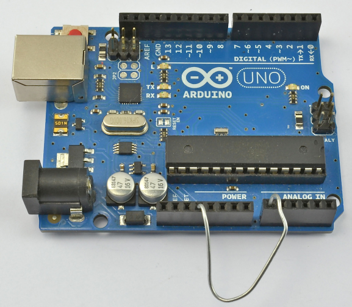
Figure 1-15 Connecting 3.3V to A0
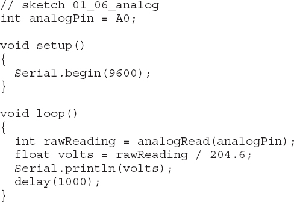
Open the Serial Monitor, and a stream of numbers should appear (Figure 1-16). These should be close to 3.3.
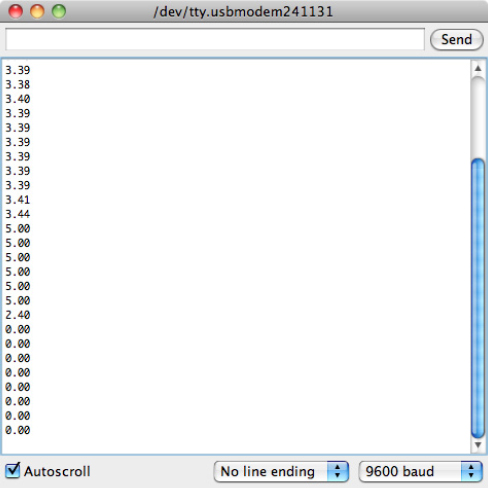
Figure 1-16 Voltage readings
CAUTION Do not connect any of the supply voltages together (5V, 3.3V, or GND). Creating such a short circuit would probably damage your Arduino and could even damage your computer.
If you now keep one end of the paperclip in A0 but move the other end of the paperclip to 5V, the readings will change to around 5V. Moving the same end to GND gives you a reading of 0V.
Analog Outputs
The Arduino Uno does not produce true analog outputs (for that you need an Arduino Due), but it does have a number of outputs that are capable of producing a pulse-width modulation (PWM) output. This approximates to an analog output by controlling the length of a stream of pulses, as you can see in Figure 1-17.
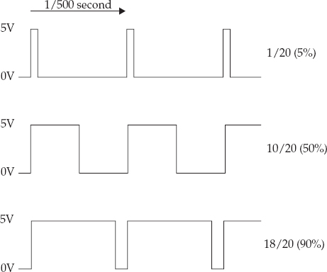
Figure 1-17 Pulse-width modulation
The longer the pulse is high, the higher the average voltage of the signal. Since there are about 600 pulses per second and most things that you would connect to a PWM output are quite slow to react, the effect is of the voltage changing.
On an Arduino Uno, the pins marked with a little ~ (pins 3, 5, 6, 9, 10, and 11) can be used as analog outputs.
If you have a voltmeter, set it to its 0..20V DC range and attach the positive lead to digital pin 6 and the negative lead to GND (Figure 1-18). Then load the following sketch:
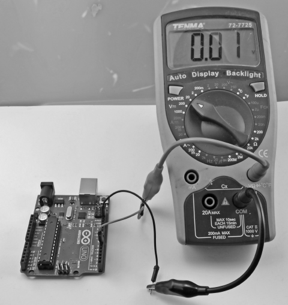
Figure 1-18 Measuring the output voltage
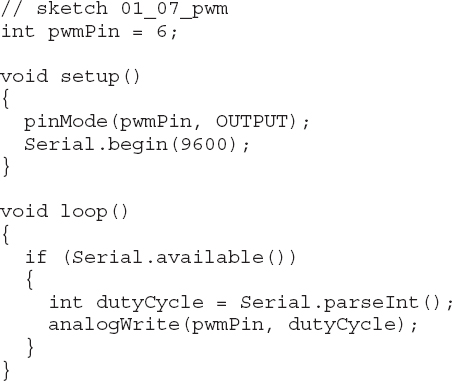
Open the Serial Monitor and type a number between 0 and 255 into the text entry field at the top of the screen next to the Send button. Then press Send and you should see the voltage change on your multimeter. Sending a value of 0 should give a voltage of around 0. A value of 127 should be about halfway between 0 and 5V (2.5V) and a value of 255 should give a value near 5V.
In this sketch, the loop function starts with an if statement. The condition for the if is Serial.available(). This means if a message is waiting from the Serial Monitor, the commands inside the curly braces will run. In this case, the Serial.parseInt command converts the message that you typed into the Serial Monitor into an int, which is then used as the argument to analogWrite to set the PWM output.
Using Libraries
Because Arduino boards have a quite limited amount of memory, you’ll find it worthwhile to only include code that will actually be used in what ends up on the board. One way to achieve this is by using libraries. In Arduino, and for that matter in C in general, a library is a collection of useful functions.
So, for example, the Arduino IDE includes a library for using an LCD display. This uses about 1.5kB of program memory. There is no point in this library being included unless you are using it, so such libraries are “included” when needed.
You accomplish this using the #include directive at the beginning of your sketch. You can add an include statement for any libraries that the Arduino IDE has installed using the Sketch | Import Library… menu option.
The Arduino IDE comes with a large selection of “official” libraries, including:
• EEPROM For storing data in EEPROM memory
• Ethernet For network programming
• Firmata The serial communications standard for Arduino to computer
• LiquidCrystal For alphanumeric LCD displays
• SD For reading and writing SD flash memory cards
• Servo For controlling servo motors
• SPI The Arduino to peripheral communication bus
• Software Serial For serial communication using nonserial pins
• Stepper For controlling stepper motors
• WiFi For WiFi network access
• Wire For I2C communication with peripherals
Some libraries are specific to a type of Arduino board:
• Keyboard USB keyboard emulation (Leonardo, Due, and Micro)
• Mouse USB mouse emulation (Leonardo, Due, and Micro)
• Audio Audio playing utilities (Due only)
• Scheduler For managing multiple execution threads (Due only)
• USBHost USB peripherals (Due only)
Finally, there are a huge number of libraries that other Arduino users have written that can be downloaded from the Internet. Some of the more popular ones are
• OneWire For reading data from Dallas Semiconductor’s range of digital devices using the 1-wire bus interface
• Xbee For Wireless serial communication
• GFX A graphics library for many different types of display from Adafruit
• Capacitive Sensing For proximity detection
• FFT Frequency analysis library
New libraries appear all the time and you may find them on the official Arduino site (http://arduino.cc/en/Reference/Libraries) or you may find them with an Internet search.
If you want to use one of these last categories of libraries, then you need to install it by downloading the library and then saving it to the Libraries folder within your Arduino folder (in your Documents folder). Note that if there is no Libraries folder, you will need to create it the first time that you add a library.
For the Arduino IDE to become aware of a library that you have installed, you need to exit and restart the IDE.
Arduino Data Types
A variable of type int in Arduino C uses 2 bytes of data. Unless a sketch becomes very memory hungry, then ints tend to be used for almost everything, even for Boolean values and small integers that could easily be represented in a single byte value.
Table 1-1 contains a full list of the data types available.
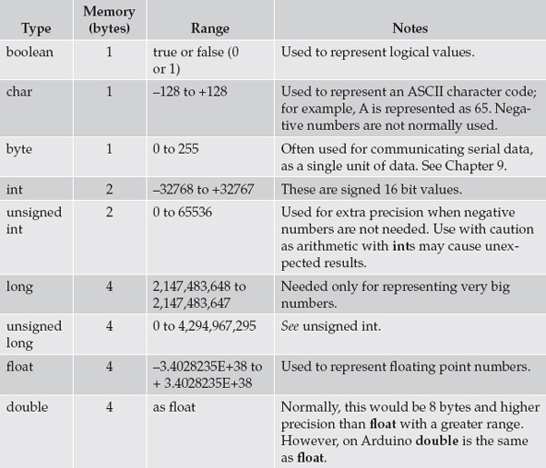
Table 1-1 Data Types in Arduino C
Arduino Commands
A large number of commands are available in the Arduino library, and a selection of the most commonly used commands is listed, along with examples, in Table 1-2.
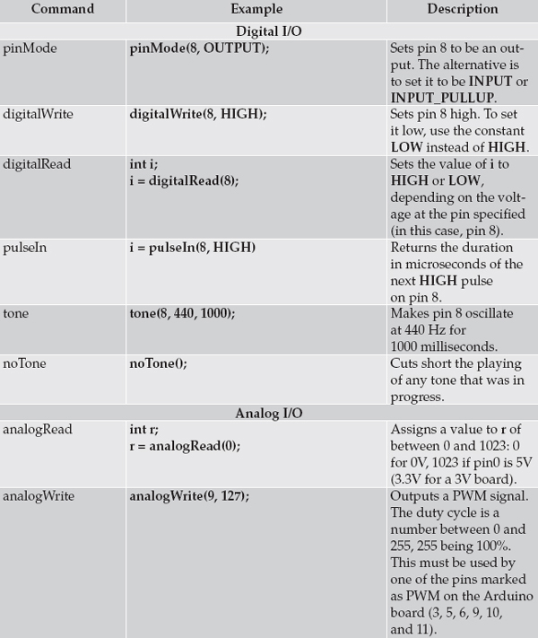
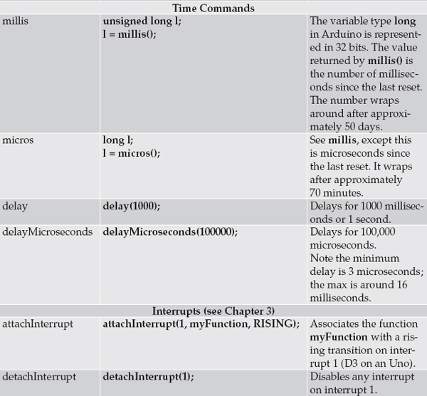
Table 1-2 Arduino Library Functions
For a full reference to all the Arduino commands, see the official Arduino documentation at http://arduino.cc.
Summary
By necessity, this chapter has been a very condensed introduction to the world of Arduino. If you require more information about the basics, then there are many online resources, including free Arduino tutorials at http://www.learn.adafruit.com.
In the next chapter, we will dig under the surface of Arduino and see just how it works and what is going on inside the nice, easy-to-use Arduino environment.